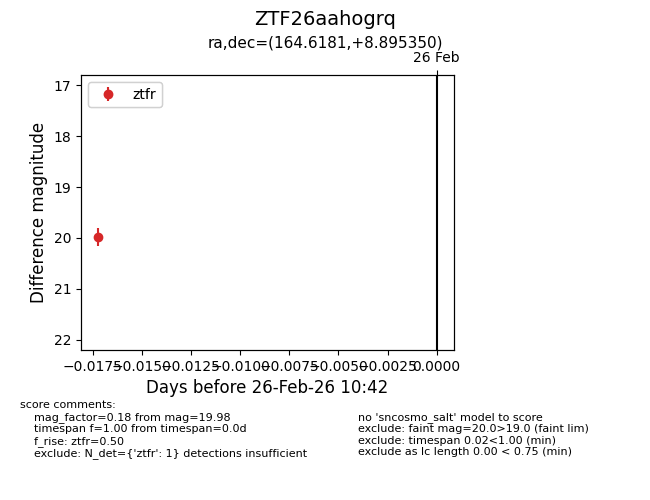
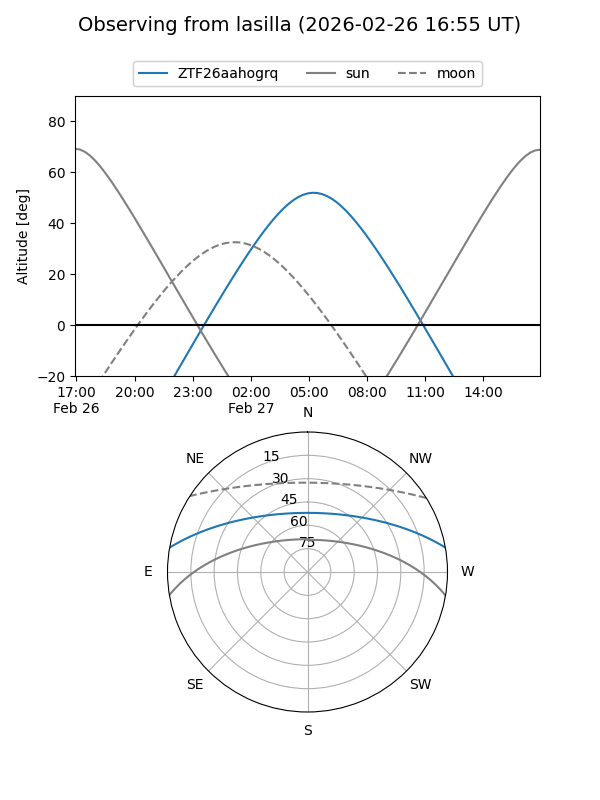
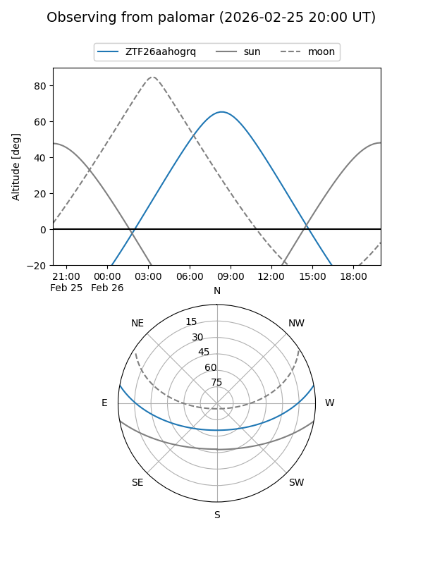
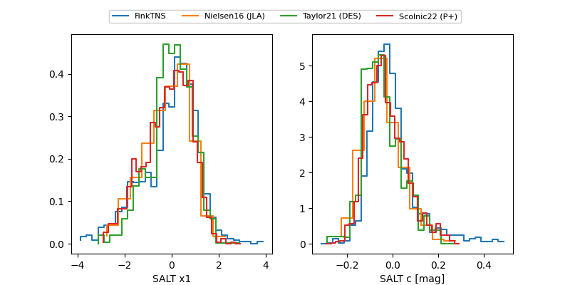

ZTF26aahogrq
Target ZTF26aahogrq at 2026-02-26 10:43
Aliases and brokers:
FINK: link
Lasair: link
ALeRCE: link
alt names
ZTF26aahogrq (ztf,fink_ztf)
Coordinates:
equatorial (ra, dec) = 164.6181,+8.89535
equatorial (HMS+DMS) = 10:58:28.34,+08:53:43.26
galactic (l, b) = (241.9429,+57.68526)
Flags:
Photometry:
last ztfr=19.98
1 ztfr detections
Lightcurve

Visibility


Additional plots
